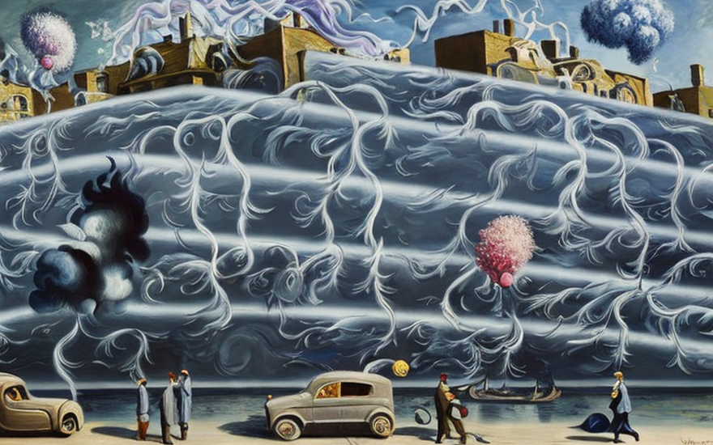

Η τράπεζα της Ποταμοχθής και τα δάνεια στατικού ηλεκτρισμού
Αρχική Σελίδα
Πίνακας Περιεχομένων
Οι κίνδυνοι της καινοτομίας

Στη μικρή πόλη της Ποταμοχθής, φωλιασμένη ανάμεσα σε κυματιστούς λόφους και ένα ελικοειδές ποτάμι, βρίσκοταν μια τράπεζα όπως όλες οι άλλες. Τίποτα αξιοσημείωτο σε αυτήν, με συνήθεις λευκούς τοίχους και μια απλή πινακίδα πάνω από την είσοδο που έγραφε “Τράπεζα της Ποταμοχθής”. Μέσα όμως συνέβαινε κάτι εκπληκτικό.
Η τράπεζα είχε βρει τρόπο να αυξήσει τον ισολογισμό της, πιστώνοντας δάνεια σε εταιρείες στατικού ηλεκτρισμού. Αυτές ήταν επιχειρήσεις που ειδικεύονταν στη συγκομιδή του πολύτιμου στατικού ηλεκτρισμού που κολλούσε στα ρούχα και άλλα υφάσματα. Ένα παρακινδυνευμένο εγχείρημα, αλλά τα πιθανά κέρδη το δικαιολογούσαν.
Οι τραπεζίτες στην τράπεζα της Ποταμοχθής ήξεραν ότι επρόκειτο για μεγάλη ευκαιρία. Κατέγραψαν λογιστικά έγγραφα και οικονομικές αποτιμήσεις, χαρτογραφώντας την πορεία προς την επιτυχία. Ήξεραν ότι αν μπορούσαν να εξασφαλίσουν αρκετά δάνεια σε αυτές τις εταιρείες στατικού ηλεκτρισμού, θα μπορούσαν να καρπωθούν τα οφέλη για τα επόμενα χρόνια.
Εν τω μεταξύ, οι ίδιες οι εταιρείες στατικού ηλεκτρισμού ευημερούσαν. Είχαν ανακαλύψει τον τρόπο να συλλέγουν τον στατικό ηλεκτρισμό που συσσωρευόταν στα ρούχα καθώς οι άνθρωποι ζούσαν την καθημερινότητά τους. Χρησιμοποιούσαν εξειδικευμένο εξοπλισμό για να ενεργοποιήσουν τη φόρτιση και να τον αποθηκεύσουν σε μεγάλες μπαταρίες, τον οποίο στη συνέχεια τον πουλούσαν σε εταιρείες παραγωγής ενέργειας προς διόλου αμελητέο κέρδος.
Οι τράπεζες δάνειζαν εκατομμύρια δολάρια σε αυτές τις εταιρείες στατικού ηλεκτρισμού, Καθεμία τράπεζα πρόθυμοποιούταν να επενδύσει σε αυτή την πολλά υποσχόμενη βιομηχανία. Αλλά δεν ήταν όλοι πεπεισμένοι ότι αυτή ήταν μια σοφή επένδυση.
Ένας άντρας, συγκεκριμένα, είχε τις αμφιβολίες του. Το όνομά του ήταν Γιάννης, και ήταν ένας ντόπιος επιχειρηματίας ήξερε την μεταβαση ανάμεσα σε ανάπτυξη και ύφεση. Ήξερε ότι η επένδυση σε νέες τεχνολογίες ήταν πάντα ένα στοίχημα και δεν ήταν σίγουρος ότι ο στατικός ηλεκτρισμός ήταν τόσο προσοδοφόρος.
Οι τραπεζίτες στην τράπεζα της Ποταμοχθής όμως ήταν πεπεισμένοι ότι ήξεραν τι έκαναν. Υπολόγισαν τους αριθμούς μετά μακράς έρευνας, και ήταν σίγουροι ότι βρίσκονταν στην αιχμή μιας καινούργιας βιομηχανίας. Για ένα διάστημα, φαίνοταν ότι είχαν δίκιο. Οι εταιρείες στατικού ηλεκτρισμού συνέχισαν να αναπτύσσονται και ο ισολογισμός των τραπεζών διογκωνόταν με κάθε τρίμηνο που περνούσε.
Η αποτυχία της επένδυσης

Καθώς πλησίαζαν οι καλοκαιρινοί μήνες, οι τραπεζίτες στην τράπεζα της Ποταμοχθής άρχισαν να παρατηρούν κάτι ανησυχητικό. Οι εταιρείες στατικού ηλεκτρισμού στις οποίες είχαν δανείσει τόσα χρήματα έβλεπαν σοβαρή μείωση στα κέρδη τους. Ήταν μια τάση που είχε δημιουργηθεί εδώ και αρκετά χρόνια, αλλά μόλις τώρα άρχισε να αναδύεται στο προσκήνιο.
Δεν ήταν δύσκολο να καταλάβουν τι συνέβαινε. Καθώς ο καιρός ζέσταινε, οι άνθρωποι καταχώνιαζαν τον βαρύ ρουχισμό τους και φορούσαν ελαφρύτερα, πιο αναπνεύσιμα υφάσματα. Υπήρχε λιγότερο ύφασμα για να προσκολληθεί ο στατικός ηλεκτρισμός, και ως αποτέλεσμα, οι εταιρείες που βασίζονταν σε αυτόν υπέφεραν.
Οι τραπεζίτες στην τράπεζα της Ποταμοχθής παρακολούθησαν με αυξανόμενη ανησυχία καθώς οι επενδύσεις τους άρχισαν να μειώνονται. Ήταν τόσο σίγουροι ότι ο στατικός ηλεκτρισμός ήταν η επόμενη μεγάλη βιομηχανία, αλλά τώρα διαφαινόταν ότι το στοίχημά τους δεν απέδιδε. Έχαναν χρήματα γοργά, και απ ́οτι φαινόταν ήταν ασταμάτητη η πτώση.
Το διοικητικό συμβούλιο της στην τράπεζας πραγματοποίησε έκτακτες συνεδριάσεις για να συζητήσει τι να κάνει στη συνέχεια. Έπρεπε να βρουν έναν τρόπο να σταματήσουν την οικονομική αιμορραγία, αλλά δεν ήξεραν πού να στραφούν. Είχαν ήδη επενδύσει μέχρι τα μπούνια στις εταιρείες στατικού ηλεκτρισμού και δεν φαινόταν να υπάρχουν άλλες βιώσιμες επιλογές.
Καθώς οι απώλειες συσσωρεύονταν, οι εντάσεις άρχισαν να αυξάνονται μεταξύ των τραπεζιτών. Είχαν ποντάρει τη φήμη και την καριέρα τους, και τώρα φαίνοταν ότι θα έχαναν τα πάντα. Άρχισαν να στρέφονται ο ένας εναντίον του άλλου, κατηγορώντας ο ένας τον άλλον για την κατάσταση στην οποία βρέθηκαν.
Άρχισαν να διαδίδονται φήμες για τις αποτυχημένες επενδύσεις στην στην τράπεζα της Ποταμοχθής και οι άνθρωποι άρχισαν να αποσύρουν τα χρήματά τους. Η πάλαι ποτέ σταθερή ροή των καταθέσεων άρχισε να επιβραδύνεται σταδιακά και η τράπεζα βρέθηκε σε επισφαλή θέση.
Οι τραπεζίτες προσπάθησαν ό,τι μπορούσαν να σκεφτούν για να ανατρέψουν την τύχη τους. Έριξαν περισσότερα χρήματα στις εταιρείες στατικού ηλεκτρισμού, ελπίζοντας ότι θα μπορούσαν να αντιμετωπίσουν την καλοκαιρινή ύφεση και να ανακάμψουν το φθινόπωρο. Σκέφτηκαν ακόμη και να πάρουν περισσότερα δάνεια οι ίδιοι, σε μια προσπάθεια να ανακτήσουν κάποιες από τις ζημίες τους.
Αλλά όλα ήταν μάταια. Το καλοκαίρι ήρθε και πέρασε και οι εταιρείες στατικού ηλεκτρισμού δεν ανέκαμψαν ποτέ. Οι τραπεζίτες στην στην τράπεζα της Ποταμοχθής κατέληξαν με αρνητικούς ισολογισμούς, οι κάποτε κερδοφόρες επενδύσεις τους κατέρρευσαν.
Το καταστροφικό σφάλματος

Οι τραπεζίτες της στην τράπεζα της Ποταμοχθής προσπαθούσαν να καταμετρήσουν τις ζημίες τους, και ήξεραν ότι έπρεπε να αρχίσουν να εισπράττουν τις υποθήκες που είχαν εξασφαλίσει έναντι των δανείων. Ήταν κάτι δυσάρεστο αλλά αναγκαίο, ήξεραν ότι έπρεπε να γίνει εάν έχουν ελπίδα να ανακτήσουν μερικά από τα χρήματά τους.
Έτσι έστειλαν ομάδες συλλεκτών στις εταιρείες στατικού ηλεκτρισμού για να αρχίσουν να μαζεύουν τα ρούχα και τα υφάσματα που είχαν καταχωρηθεί ως εγγυήσεις. Όταν έφτασε εκείνη η ώρα, αντίκρυσαν κάτι απροσδόκητο.
Τα ρούχα και τα υφάσματα, τα ενεκριμένα ως εγγυήσεις ήταν σε θλιβερή κατάσταση. Βρώμικα, λεκιασμένα και σκωροφαγωμένα, απόδειξη της σκληρής χρήσης που υπέστησαν στην υπηρεσία της παραγωγής στατικού ηλεκτρισμού. Οι τραπεζίτες δύσκολα μπορούσαν να πιστέψουν ότι είχαν δεχτεί τέτοια κουρέλια ως εγγύηση για τα δάνειά τους.
Έπρεπε να συγκεντρωσουν ότι διαθέσιμο, για να το μεταπωλήσουν σε υψηλή τιμή, μήπως κα καλύψουν τουλάχιστον ένα μέρος των χρηματικών ζημιών τους. Έτσι, άρχισαν να δουλεύουν, κουβαλώντας στην αγκάλη σωρό από βρώμικα, λεκιασμένα υφάσματα και βάζοντάς τα σε σακούλες και κουτιά.
Οι τραπεζίτες ήταν αηδιασμένοι με την κατάσταση. Μερικά από τα υφάσματα ήταν τόσο λαδωμένα που έπρεπε να φορούν γάντια στην μετακίνηση. Άλλα ήταν τόσο τρυπημένα που ουσιαστικά διαλυόντουσαν στα χέρια τους.Καμία σχέση με φρεσκοραμμένο βαμβάκι, υψηλής ποιότητας που τους είχαν υποσχεθεί όταν τα δέχονταν ως εγγύηση.
Αλλά συνέχισαν, αποφασισμένοι να κάνουν ό,τι μπορούσαν για να σώσουν την κατάσταση. Φόρτωσαν φορτηγά και μεταφορικά οχήματα με τα βρώμικα, υφάσματα και τα μετέφεραν πίσω στην τράπεζα, όπου τα δίπλωσαν και προσπάθησαν να προσδιορίσουν, αν μη τι άλλο, ότι σώζεται.
Ήταν μια καταθλιπτική σκηνή. Τα κάποτε πολύτιμα υφάσματα ήταν τώρα άχρηστα κουρέλια, καλυμμένα με βρωμιά, λεκέδες και τρύπες από σκώρο. Αλλά οι τραπεζίτες της στην τράπεζα της Ποταμοχθής ήταν αποφασισμένοι, και άρχισαν να εργαστούν προσπαθώντας να βρουν έναν τρόπο να πουλήσουν ό,τι μπορούσαν και να ανακτήσουν τουλάχιστον μερικές από τις ζημίες τους.
Η διαμόρφωση της τραπεζικής πολιτικής

Η κυβέρνηση δεν είχε άλλη επιλογή από το να παρέμβει και να διασώσει την όχθη της Ποταμοχθής. Ήταν μια τεράστια αμηχανία για τον τραπεζικό κλάδο και άφησε πολλούς να αναρωτιούνται πώς θα μπορούσε να προκύψει μια τέτοια κατάσταση εξαρχής.
Αλλά καθώς οι κυβερνητικοί αξιωματούχοι εξέτασαν την κατάσταση, συνειδητοποίησαν γρήγορα ότι υπήρχε μεγάλη διαφορά στην ποιότητα των εξασφαλίσεων που είχε αποδεχθεί η στην τράπεζα της Ποταμοχθής. Ενώ ορισμένες τράπεζες δέχονταν μόνο γη ως εγγύηση, η τράπεζα της Ποταμοχθής είχε δεχτεί ρούχα και υφάσματα, τα οποία ήταν πολύ λιγότερο πολύτιμα και πολύ πιο επιρρεπή στη φθορά.
Αυτή η διαφορά των ποιοτικών εξασφαλίσεων ήταν ένας σημαντικός παράγοντας που συνέβαλε στην πτώση της στην τράπεζας. Η γη, ένα σταθερό και αξιόπιστο περιουσιακό στοιχείο που μπορεί να πουληθεί ή να αναπτυχθεί εάν χρειάζεται για να ανακτηθούν οι ζημίες. Τα ρούχα και τα υφάσματα, από την άλλη, ήταν πολύ λιγότερο αξιόπιστα λόγω της φθοράς και σχισίματος που υπόκεινται.
Οι κυβερνητικοί αξιωματούχοι γνώριζαν ότι έπρεπε να λάβουν μέτρα για να αποτρέψουν αυτό το είδος της κατάστασης να συμβεί ξανά. Κατέστησαν σαφές ότι οι τράπεζες πρέπει να δέχονται μόνο γη ως εγγύηση και ότι οποιαδήποτε στην τράπεζα παρεκκλίνει από αυτήν την πολιτική θα απορριφθεί η κρατική βοήθεια στο μέλλον.
Η ανατροπή της πρακτικής

Οι τράπεζες σε όλη τη χώρα άρχισαν να επανεκτιμούν τις δανειοδοτικές τους πρακτικές και τις πολιτικές τους για εξασφαλίσεις, αποφασισμένες να μην επαναλάβουν το ίδιο σφὰλμα που υπέπεσε η τράπεζα της Ποταμοχθής. Η Ποταμοχθή είχε μάθει το μάθημά της. Δέχθηκε χαμηλής ποιότητας εξασφαλίσεις με τη μορφή ρούχων και υφασμάτων και πληρωσε το τίμημα με την υποβάθμιση των περιουσιακών στοιχείων που κατήντησαν κουρέλια. Από εδώ και πέρα, η τράπεζα αποφάσισε να δέχεται μόνο γη ως εγγύηση.
Η απόφαση βασίστηκε σε μια σειρά παραγόντων, ο σημαντικότερος από τους οποίους ήταν το γεγονός ότι η γη ήταν ένα σταθερό και αξιόπιστο περιουσιακό στοιχείο που διατηρεί την αξία της με την πάροδο του χρόνου. Μπορεί να παρουσιάζει διακυμάνσεις στην τιμή ανάλογα με τις συνθήκες της αγοράς, αλλά θα έχει πάντα αξία ως φυσικό περιουσιακό στοιχείο που μπορεί να αναπτυχθεί ή να πωληθεί. Σε αντίθεση με την τεχνολογία, η οποία πάντα καταλήγει ξεπερασμένη και χάνει την αξία της, η γη είναι ένα απτό αγαθό με διαχρονική αξία..
Αυτή ήταν μια σημαντική αλλαγή από το παρελθόν, όταν οι τράπεζες ήταν πιο πρόθυμες να δεχτούν τεχνολογία, όπως ρούχα, προγράμματα υπολογιστών, ακόμη και γονίδια DNA, ως εγγύηση για δάνεια. Η τεχνολογία χάνει την αξία του με την πάροδο του χρόνου, συχνά γρήγορα και απρόβλεπτα. Τα ρούχα βγαίνουν εκτός μόδας, τα προγράμματα υπολογιστών γίνονται ξεπερασμένα και τα γονίδια DNA χάνουν τη σημασία τους καθώς προχωρά η ιατρική επιστήμη. Ενώ η τεχνολογία μπορεί να φαίνεται καλό στοίχημα βραχυπρόθεσμα, ήταν μια επικίνδυνη επένδυση μακροπρόθεσμα.
Το πρόβλημα με την τεχνολογία ήταν ότι υπόκειτο σε συνεχείς αλλαγές και καινοτομίες. Νέες και καλύτερες εκδόσεις προϊόντων και υπηρεσιών αναπτύσσονται συνεχώς, και είναι δύσκολο να προβλεφθεί ποιες θα πετύχουν και ποιες θα αποτύχουν. Ως αποτέλεσμα, οι τράπεζες που αποδέχονταν την τεχνολογία ως εξασφάλιση έπαιρναν σημαντικό ρίσκο και δεν υπήρχε καμία εγγύηση ότι θα μπορούσαν να ανακτήσουν τις ζημίες τους εάν κάτι πήγαινε στραβά.
Τελικά, το μάθημα που είχε πάρει Η Ποταμοχθή ήταν πολύτιμο. Έμαθαν ότι την ανισότητα των περιουσιακών στοιχείων και ότι ορισμένα θεωρούνται πιο αξιόπιστα και πολύτιμα από άλλα. Λαμβάνοντας την απόφαση να δεχτεί μόνο γη ως εγγύηση, η στην τράπεζα είχε εξασφαλίσει ότι θα ήταν σε θέση να πραγματοποιήσει υπεύθυνες επενδύσεις που θα ωφελούσαν τόσο τους πελάτες της όσο και ίδιο της τον ισολογισμό.